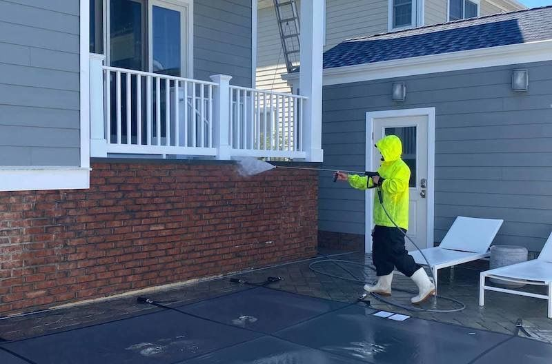
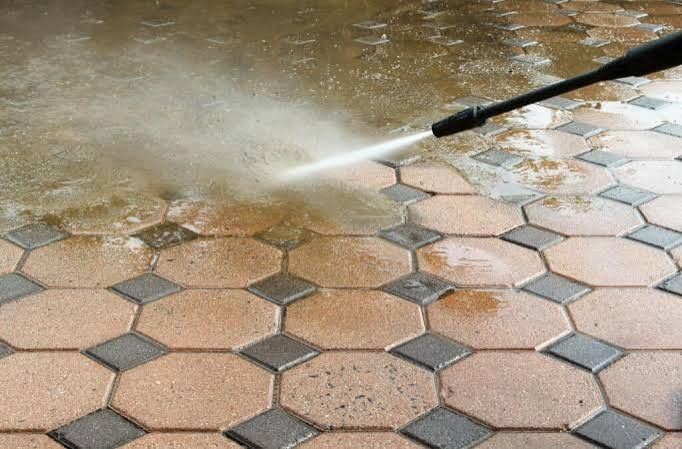
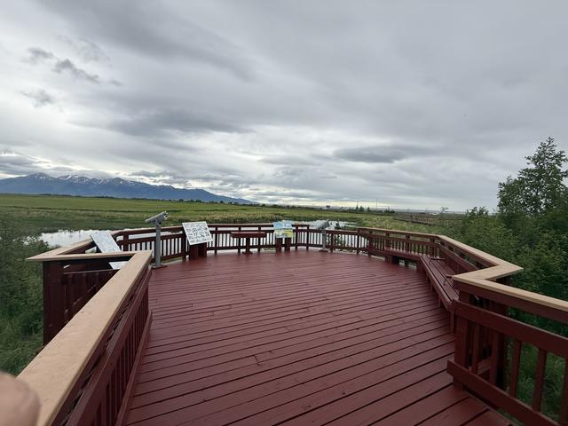

The right pressure for each surface
Siding gets a gentle soft wash. Concrete gets real pressure. Knowing which is which is the whole trade.
What I wash
-
House washing.
The full exterior — siding, soffits, and trim — washed clean of a season's dirt and growth.
-
Soft washing.
Low pressure and the right cleaner for what's growing. High pressure on siding drives water behind it and damages the surface, so siding never gets blasted — it gets treated and rinsed.
-
Concrete pressure washing.
Driveways, sidewalks, and patios. A surface cleaner for even coverage, spot work on rust and oil.
-
Deck washing.
Enough pressure to clean, not enough to damage the wood fibers. Often the first step before staining — and sometimes it's all the deck needs.
A wash is also the honest first step before a paint or stain quote — sometimes what looks like a repaint is just ten years of dirt.
Concrete, before it goes gray again


Washing and finishing go together: the boardwalk on the right got both — washed down, then stained to stand up to the weather.
Get a price without the drive-out
Send me photos and a few details and I'll send back a written price, usually in a day or two — what's included, the prep, the coats. If you'd prefer an in-person look, call and we'll set a time.